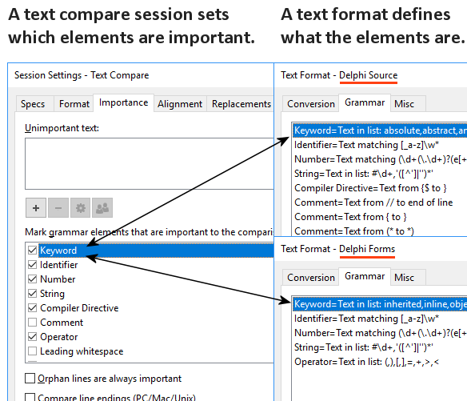

In Beyond Compare, file formats describe the syntax of specific kinds of files by defining elements. File formats are typically picked automatically, based on the filename extension.
A Text Compare session defines which elements are important to the comparison. Notice that the session settings deal with elements in a more abstract manner while the various file formats handle the syntax details.

To change the default importance of an element type
1.In the Home view's Sessions tree, under the New branch, right-click on Text Compare and pick Edit.
2.Switch to the Importance tab.
3.Mark or unmark the appropriate checkboxes.
4.Click Save.
To override importance only in the current Text Compare view
1.Open Sessions > Session Settings  and switch to the Importance tab.
and switch to the Importance tab.
2.Mark or unmark the appropriate checkboxes.
3.At the bottom of the dialog, pick Use for this view only from the dropdown list.
4.Click OK.
To override importance in a Folder Compare session
1.From the Folder Compare session, open a child Text Compare session.
2.Open Sessions > Session Settings  and switch to the Importance tab.
and switch to the Importance tab.
3.Mark or unmark the appropriate checkboxes.
4.At the bottom of the dialog, pick Use for all files within parent session from the dropdown list.
5.Click OK.